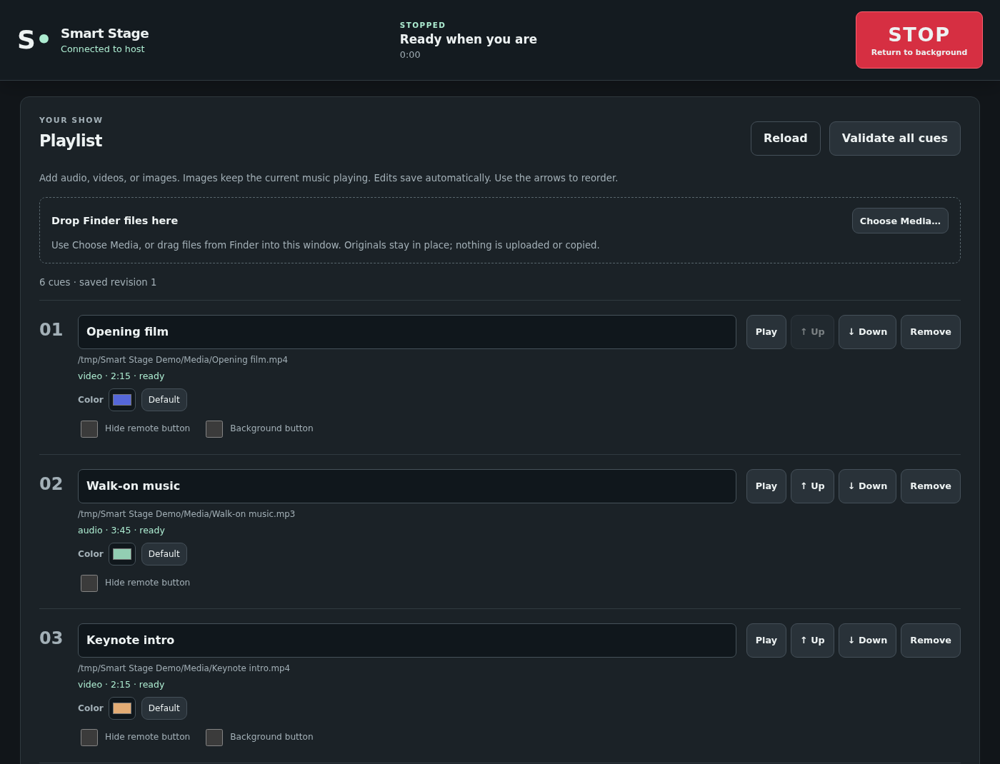
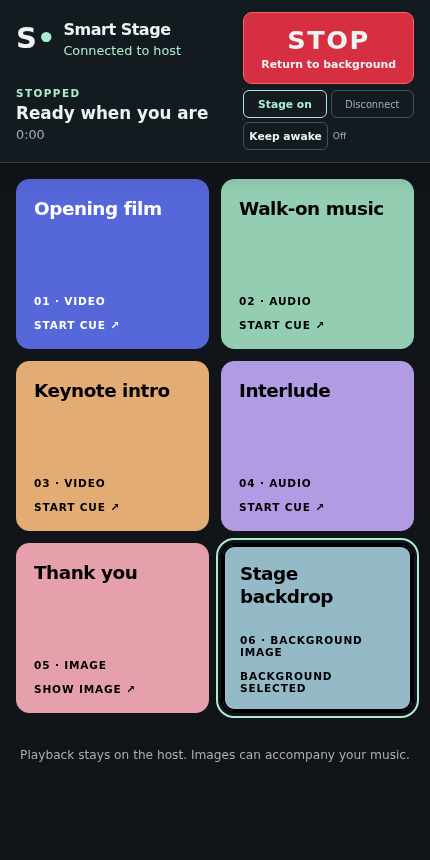
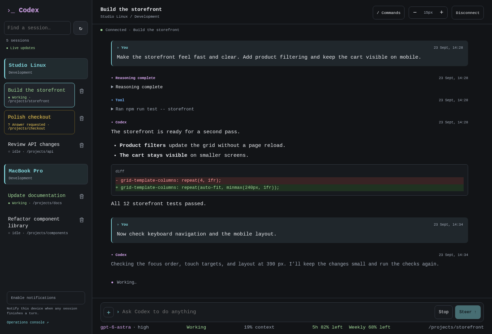

LIVE SHOW CONTROL
Smart Stage
Audio, video, and image cue playback for Mac and Windows, with a desktop playlist and remote controls for phones and tablets.
SOFTWARE & HARDWARE
Show control
Coding tools
Embedded systems
01 / COLLECTION


Audio, video, and image cue playback for Mac and Windows, with a desktop playlist and remote controls for phones and tablets.

A self-hosted gateway for accessing Codex sessions through Telegram and a browser, with workers running on Linux or macOS.
A terminal client for ServiceNow Build Agent with AI conversations, local application builds, and synchronization between local files and instances.
A browser-based tool for copying custom ServiceNow applications between instances, with mirroring, exclusions, and optional renaming.
An ESP32 MIDI synthesizer with analog-modeled filters, dual envelopes, LFO modulation, and settings saved to flash.
Random Italian quotes on a Lilygo T5 4.7-inch e-paper display, with Wi-Fi configuration, periodic refresh, and deep-sleep power saving.
A Galagino fork for the ESP32-C6 board with a 1.47-inch display, supporting Galaga, Pac-Man, and Donkey Kong.
Tools for reprogramming Series 45 POV fans, with updated character maps, a Python 3 script, and an Arduino sketch.
A minimal Docker container with sysdig and csysdig, including a kernel module compiled at build time for system inspection.
A Digital Visitor demo application for ServiceNow, with the instance-generated application files available in the repository.